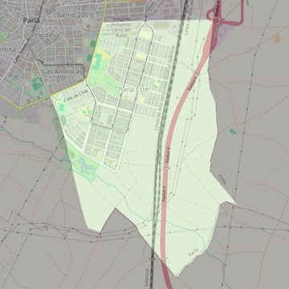

San Francisco de Sales
- Arciprestazgo
- Parla
- Población
- Parla
- Dirección postal
- c/ Jaime I el Conquistador, 141
- Código postal
- 28983
- Extensión
- 7,53 km² (753 ha)
- Teléfono
- 677 585 257
- Correo electrónico
- parroquia.fransales@gmail.com
- Información demográfica
- De la parroquia · De la población (Parla) · Del arciprestazgo (Parla)


Descargar mapaLímites según decreto
“Partiendo de la intersección de la avenida Juan Carlos I con la avenida de América, siguen por el eje de la avenida de América y por el eje de la avenida Cerro del Rubal (en dirección noreste), por una línea recta imaginaria hasta el límite con los términos municipales de Parla-Pinto, por los límites de los términos municipales de Parla-Pinto (en dirección sureste), por los límites de los términos municipales de Parla-Torrejón de Velasco (en dirección noroeste), por una línea recta imaginaria hasta el comienzo de la avenida Juan Carlos I, por el eje de la avenida Juan Carlos I (en dirección (noroeste) hasta el encuentro con la avenida de América, punto de partida”. (Decreto de erección de la parroquia, B.O., Junio-2007, pág. 714)